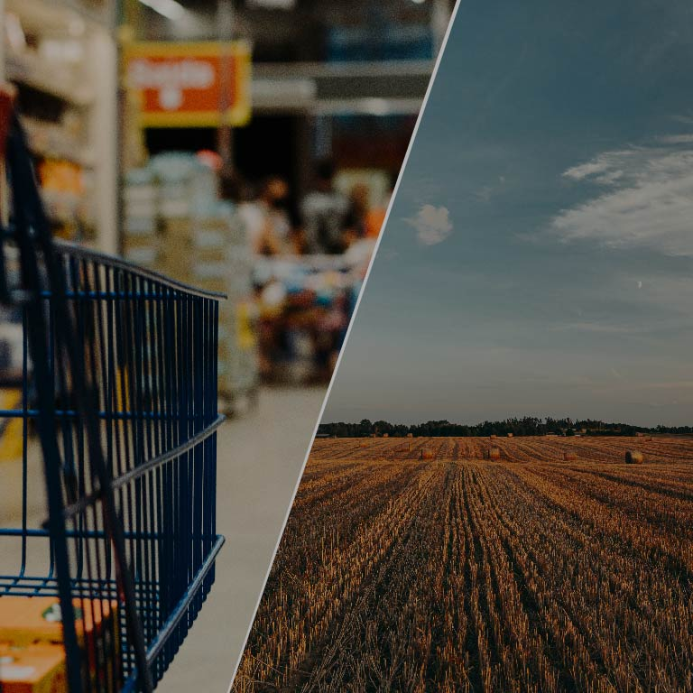

Skörd
Totala skörden i länet divideras med befolkningen för att få fram mängden skörd per person. Sedan divideras värdet med personens livsmedelsbehov, vilket är 500 kg spannmål per person och år (Einarsson & Naturskyddsföreningen, 2015).
VARFÖR DET HÄR ÄR VIKTIGT
Vi lever i en tid av växande global oro. Krig, energikriser och politiska osäkerheter gör att vi behöver vara förberedda på omfattande kriser. Svensk livsmedelsproduktion är väldigt avgörande i dessa situationer.
Men sanningen är att vi importerar över hälften av all mat vi konsumerar (Lantbrukarnas Riksförbund, 2025), vilket gör oss väldigt sårbara. Vad händer egentligen om gränserna stängs och transporterna stoppas?
Motståndskraft kartlägger hur mycket åkermark och lokal produktion som finns i varje län. Vissa län har goda förutsättningar, medan andra är helt beroende av sina grannar för att överleva.
Hur står det till där just du bor? Använd vår karta för att utforska ditt eget eller andra län. Se var maten faktiskt produceras, var bristerna är som störst och hur nära vi egentligen ligger krisgränsen.

Kartan visualiserar ett regionalt livsmedels motståndskraftindex i Sveriges län.
Enligt Tendall et al. (2015) innebär livsmedelsmotståndskraft att livsmedelssystemet
och dess aktörer har förmågan att säkerställa en tillräcklig och stabil tillgång
till mat för hela befolkning, även vid förväntade eller oförutsedda kriser och störningar.
Vårat motståndskraftindex bygger på tre indikatorer som är skörd, åkermark och djurproduktion.
Genom dessa indikationer skapar vi ett livsmedelsmotståndskraft i en tydlig 100 procentig skala.
Data som ligger till grund för indexet har hämtats från Statistikmyndigheten SCB:s
Statistikdatabas och Jordbruksverket (Statistikmyndigheten SCB, u.å.; Jordbruksverket, u.å.).
På kartan representerar den orange färgskalan en låg grad av livsmedelsmotståndskraft,
medan den gröna färgskalan representerar en hög grad av livsmedelsmotståndskraft. De ljusare
nyanserna visar de lägsta respektive högsta nivåerna av motståndskraft.
Här visas Skånes motståndskraftvärden utifrån åkermark, skörd och köttproduktion. Staplarna visar hur väl länets lokala produktion täcker behovet per person, medan cirkeldiagrammet sammanfattar länets totala motståndskraftindex.
Här visas Blekinge motståndskraftvärden utifrån åkermark, skörd och köttproduktion. Staplarna visar hur väl länets lokala produktion täcker behovet per person, medan cirkeldiagrammet sammanfattar länets totala motståndskraftindex.
Här visas Kalmars motståndskraftvärden utifrån åkermark, skörd och köttproduktion. Staplarna visar hur väl länets lokala produktion täcker behovet per person, medan cirkeldiagrammet sammanfattar länets totala motståndskraftindex.
Här visas Västra Götalands motståndskraftvärden utifrån åkermark, skörd och köttproduktion. Staplarna visar hur väl länets lokala produktion täcker behovet per person, medan cirkeldiagrammet sammanfattar länets totala motståndskraftindex.
Här visas Gotlands motståndskraftvärden utifrån åkermark, skörd och köttproduktion. Staplarna visar hur väl länets lokala produktion täcker behovet per person, medan cirkeldiagrammet sammanfattar länets totala motståndskraftindex.
Här visas Hallands motståndskraftvärden utifrån åkermark, skörd och köttproduktion. Staplarna visar hur väl länets lokala produktion täcker behovet per person, medan cirkeldiagrammet sammanfattar länets totala motståndskraftindex.
Här visas Kronobergs motståndskraftvärden utifrån åkermark, skörd och köttproduktion. Staplarna visar hur väl länets lokala produktion täcker behovet per person, medan cirkeldiagrammet sammanfattar länets totala motståndskraftindex.
Här visas Jönköpings motståndskraftvärden utifrån åkermark, skörd och köttproduktion. Staplarna visar hur väl länets lokala produktion täcker behovet per person, medan cirkeldiagrammet sammanfattar länets totala motståndskraftindex.
Här visas Östergötlands motståndskraftvärden utifrån åkermark, skörd och köttproduktion. Staplarna visar hur väl länets lokala produktion täcker behovet per person, medan cirkeldiagrammet sammanfattar länets totala motståndskraftindex.
Här visas Stockholms motståndskraftvärden utifrån åkermark, skörd och köttproduktion. Staplarna visar hur väl länets lokala produktion täcker behovet per person, medan cirkeldiagrammet sammanfattar länets totala motståndskraftindex.
Här visas Uppsalas motståndskraftvärden utifrån åkermark, skörd och köttproduktion. Staplarna visar hur väl länets lokala produktion täcker behovet per person, medan cirkeldiagrammet sammanfattar länets totala motståndskraftindex.
Här visas Södermanlands motståndskraftvärden utifrån åkermark, skörd och köttproduktion. Staplarna visar hur väl länets lokala produktion täcker behovet per person, medan cirkeldiagrammet sammanfattar länets totala motståndskraftindex.
Här visas Värmlands motståndskraftvärden utifrån åkermark, skörd och köttproduktion. Staplarna visar hur väl länets lokala produktion täcker behovet per person, medan cirkeldiagrammet sammanfattar länets totala motståndskraftindex.
Här visas Öreberos motståndskraftvärden utifrån åkermark, skörd och köttproduktion. Staplarna visar hur väl länets lokala produktion täcker behovet per person, medan cirkeldiagrammet sammanfattar länets totala motståndskraftindex.
Här visas Västmanlands motståndskraftvärden utifrån åkermark, skörd och köttproduktion. Staplarna visar hur väl länets lokala produktion täcker behovet per person, medan cirkeldiagrammet sammanfattar länets totala motståndskraftindex.
Här visas Dalarnas motståndskraftvärden utifrån åkermark, skörd och köttproduktion. Staplarna visar hur väl länets lokala produktion täcker behovet per person, medan cirkeldiagrammet sammanfattar länets totala motståndskraftindex.
Här visas Gävleborgs motståndskraftvärden utifrån åkermark, skörd och köttproduktion. Staplarna visar hur väl länets lokala produktion täcker behovet per person, medan cirkeldiagrammet sammanfattar länets totala motståndskraftindex.
Här visas Västernorrlands motståndskraftvärden utifrån åkermark, skörd och köttproduktion. Staplarna visar hur väl länets lokala produktion täcker behovet per person, medan cirkeldiagrammet sammanfattar länets totala motståndskraftindex.
Här visas Jämtlands motståndskraftvärden utifrån åkermark, skörd och köttproduktion. Staplarna visar hur väl länets lokala produktion täcker behovet per person, medan cirkeldiagrammet sammanfattar länets totala motståndskraftindex.
Här visas Västerbottens motståndskraftvärden utifrån åkermark, skörd och köttproduktion. Staplarna visar hur väl länets lokala produktion täcker behovet per person, medan cirkeldiagrammet sammanfattar länets totala motståndskraftindex.
Här visas Norrbottens motståndskraftvärden utifrån åkermark, skörd och köttproduktion. Staplarna visar hur väl länets lokala produktion täcker behovet per person, medan cirkeldiagrammet sammanfattar länets totala motståndskraftindex.
STARKASTE LÄNEN
Dessa län har högst motståndskraftindex i modellen och visar starkast förmåga att klara livsmedelsbehovet regionalt.
STÖRST RISKZON
Stockholm befinner sig i störst riskzon eftersom länet har svaga
siffror i relation till sin befolkning. Kombinationen av låg åkermark
per person, begränsad skörd och låg djurproduktion gör regionen
extra sårbar vid en livsmedelskris.
MÅLUPPFYLLELSE
Endast ett fåtal av Sveriges län når upp till målen i modellen. Det visar att de flesta län är beroende av andra regioner för att klara sin långsiktiga livsmedelsförsörjning.
STEG 1
Totala skörden i länet divideras med befolkningen för att få fram mängden skörd per person. Sedan divideras värdet med personens livsmedelsbehov, vilket är 500 kg spannmål per person och år (Einarsson & Naturskyddsföreningen, 2015).
STEG 2
Total åkermark i länet divideras med befolkningen för att få fram mängden åkermark per person. Sedan divideras värdet med personens livsmedelsbehov, vilket är 0,41 hektar åkermark per person och år (Länsstyrelsen, 2016).
STEG 3
Totala köttproduktionen i länet divideras med befolkningen för att få fram mängden köttproduktion per person. Sedan divideras värdet med personens livsmedelsbehov, vilket är 80 kg köttproduktionvikt per person och år (Jordbruksverket, 2026).
Varför 1? Om ett län producerar 140 % av behovet blir värdet ändå 1, alltså 100 %.
Varför divideras med 3? Resultaten från de tre indikatorerna läggs ihop och delas på 3 eftersom modellen består av tre kategorier.
Totalpoäng = R x 100: Till sist multipliceras resultatet med 100 för att få värdet i procent.